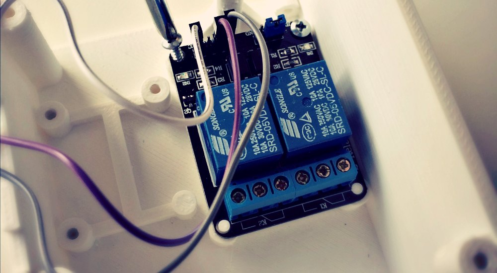

Electronic Components
Fish FeederBot is built based on Raspberry Pi - an open source, inexpensive, and expandable single board computer, which connects to stepper motor and relay modules for feeder and pump control.

Vision Sensor
Raspberry Pi Camera is used to capture images, and each image is then processed by computer vision programming to measure the number of fish.
Feeder Module
Feeder driven by a stepper motor can precisely control the quantity of fish food to be released.

Relay Module
To ensure the camera captures images of fish feeding, a relay module is used to temporarily turn off the power of pumps that produce water flow.
3D Printed Housing
Electronic components are protected by 3D printed plastic cases, which can be customized to fit various rearing systems.